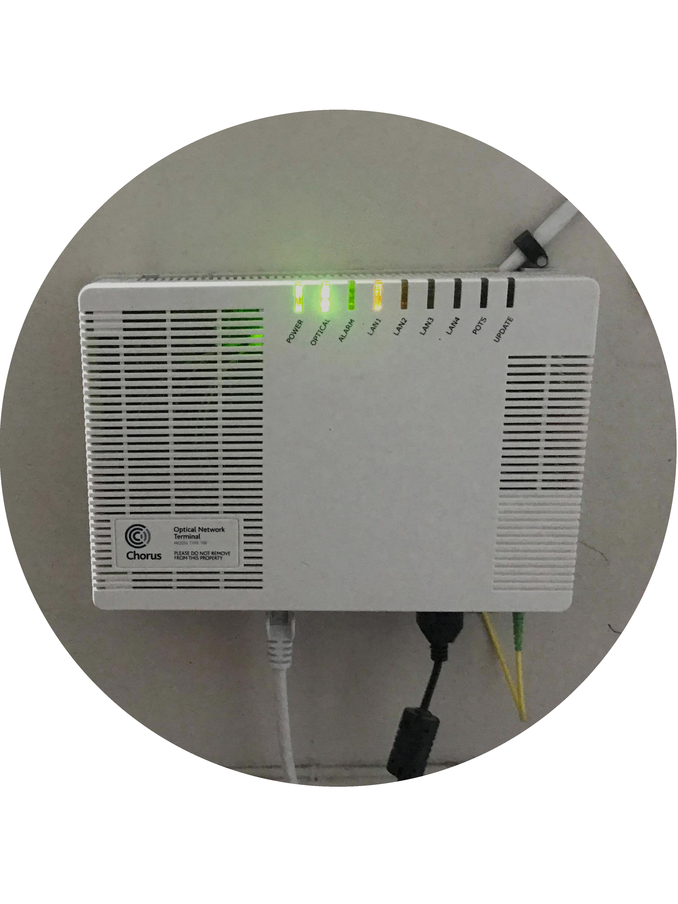
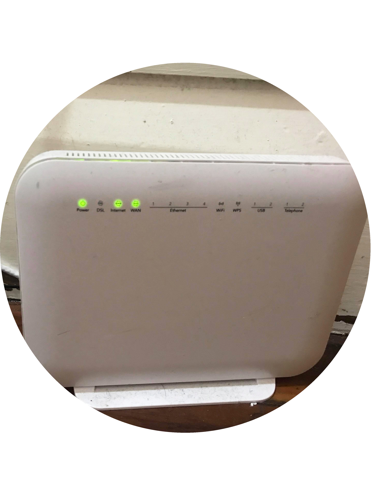
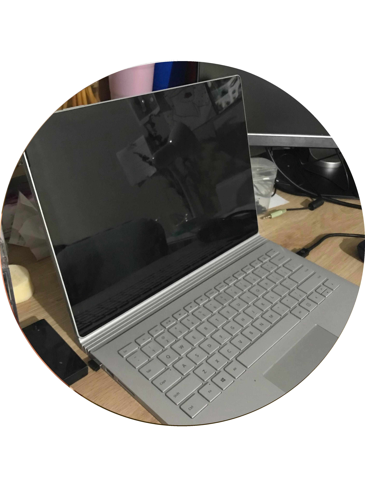

FIBRE BOX
This fibre box connects to our router providing our flat with ultra fast fibre optic broadband.

ROUTER
The Router connects us all to the internet by providing us with WiFi around our flat.

LAPTOP
My Laptop can connect to the WiFi meaning that I am able to connect to the internet.

PHONE
Using my phone I am also able to connect to the internet using WiFi and also cellular data provided by my phone company.